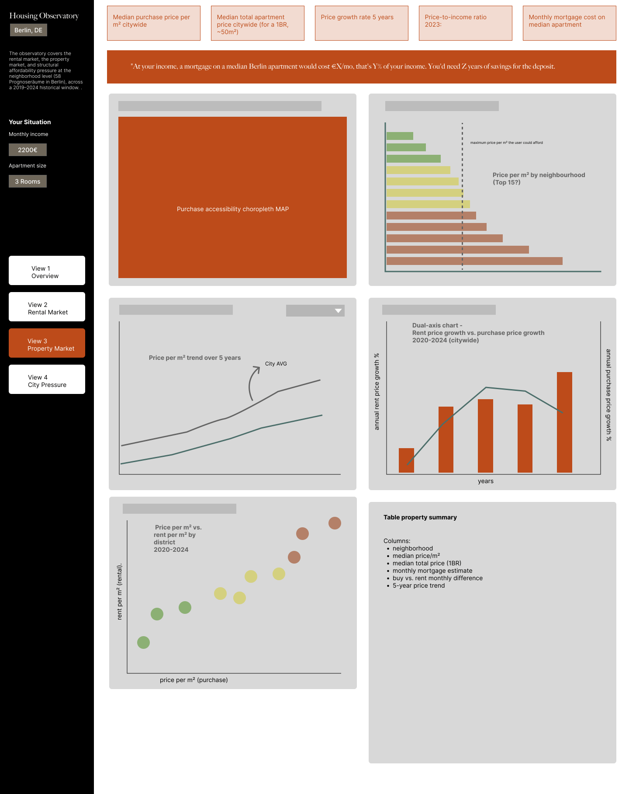
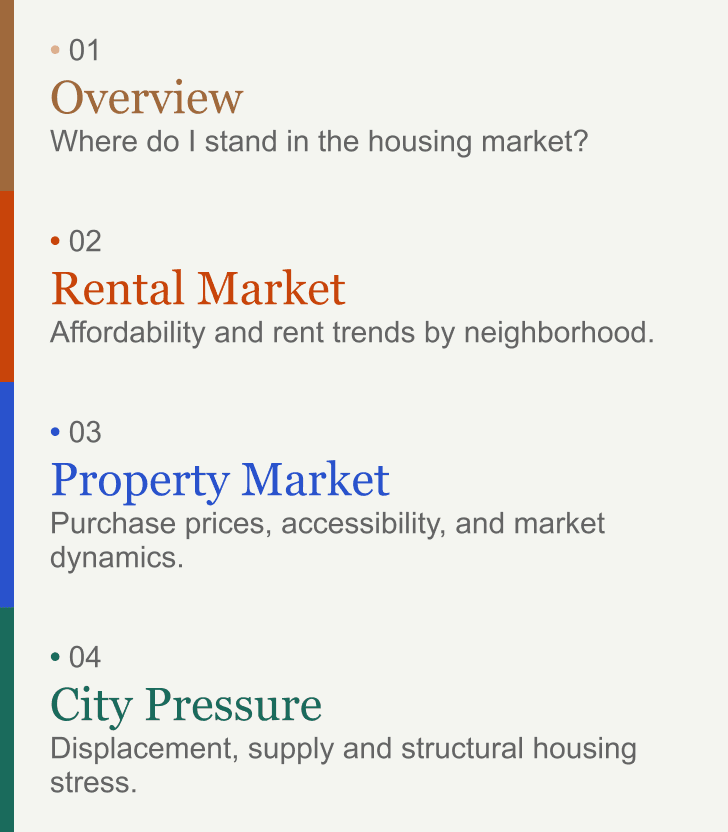

- Type
- Mentorship Project
- Category
- Urban Data
- Timeframe
- 10 weeks
- Tools
- PostgreSQL, dbt, Tableau, Python
Context
The city has a price, where do I stand?
Berlin has 3.8 million residents and roughly 85% of them rent. That makes housing not a real estate question but a social one. Yet most housing data tools are built for the minority who own, or who are looking to invest.
The Housing Observatory is a public-facing interactive dashboard that puts residents at the centre: Enter an income and apartment size, and the tool immediately maps how much of the city is within reach across 58 neighbourhoods, four analytical views, and a decade of market data.
Built over ten weeks as part of a structured mentorship programme with the Data Visualization Society, it follows a full end-to-end pipeline from raw government sources to a published interactive dashboard.
Personas & Questions
Who is it for?
Three personas shaped every analytical and design decision in the project. Each one arrives at the dashboard with a different stake in the housing market and a different question the tool is designed to answer.
Every design decision (every chart type, every metric, every callout) was tested against one of their three questions.
The Newcomer
Arriving to a city they don’t know yet.
“Considering my income, which neighbourhood are affordable to rent, and how has it been changing?”
The Resident
Already here. Deciding whether to keep renting or decide to buy.
“Does buying an apartment make sense for me here, or is the market pricing me out?”
The Researcher
Following the data to understand the market.
“Where is affordability eroding the fastest and which neighbourhoods show the highest indicators of displacement risk?”
Sources
Public Data. Private Effort.
The dashboard draws on 24 different tables from several different sources:
- The primary source is the IBB Wohnungsmarktbericht, the Investment Bank Berlin's annual housing market report, which contains rental asking prices at neighbourhood level, construction completions, building permits, and social housing projections.
- Purchase prices came from the Gutachterausschuss, Berlin's official property valuation committee.
- Neighbourhood-level deprivation data came from the GSSA Berlin Senate's Sozialstrukturatlas.
- Social housing share, residency stability, welfare dependency came from the Wohnatlas 2022.
- Rent burden and ownership rates came from the Mikrozensus.
- Income data stretching back to 1991 came from Amt für Statistik Berlin-Brandenburg.
Some of these figures were buried inside PDF tables, not downloadable datasets, and required manual extraction into structured CSVs.
One significant geographic problem sat underneath all of it. Berlin redesigned its neighbourhood hierarchy in 2021, reorganising 60 Prognoseräume into 58. Datasets predating that change use the old boundaries. Joining them required building a weighted crosswalk.
Engineering & Architecture
The Infrastructure Behind the Story
All sources were loaded into PostgreSQL with every column as text. Type casting and cleaning were deferred entirely to the transformation layer. Transformation ran in dbt, following a three-layer architecture.

Staging layers
Casts types, normalises decimal separators, applies LPAD formatting to LOR IDs, and renames columns consistently. A silent join failure between flat CSV neighbourhood IDs and the district shapefile integers was caught and fixed here.
Intermediate layers
Computes derived metrics: year-over-year rent growth, cumulative indexed series from 2014, the mortgage affordability formula, and the four displacement score dimensions.
Mart layers
Seven output tables, one per dashboard section. No joins happen in Tableau. Tableau Public cannot connect live to a database, so all data was pre-computed and exported as static CSV extracts.
Original Methodology
The Displacement Risk Score
The most analytically original element is a composite neighbourhood-level indicator: the Displacement Risk Score (DRS).
It asks which neighbourhoods concentrate the conditions under which displacement is most likely to occur, a question no single dataset can answer alone.
The score is grounded in Andrej Holm's gentrification research and Zuk et al.'s (2018) multidimensional displacement framework. It combines four equally weighted dimensions:
1
Rent growth 2021–2024
The most direct signal of displacement pressure.
2
Socioeconomic vulnerability
The ESIx 2022 z-score from the GSSA Berlin Senate capturing: income, employment, and social integration at neighbourhood level.
3
Unprotected tenure share
1 minus the combined social and municipal housing share. Residents outside the protected sector face full market exposure.
4
Residential instability
1 minus the normalised 5-year residency share. Low long-term residency signals a neighbourhood already in transition.
A high score means the conditions enabling displacement are present and compounding, not that displacement has already occurred.
Design Process & Decisions
Four Views, One Story

The persistent left panel carries the global parameters (income slider and apartment size toggle) across all four views without resetting.
 1
2
3
4
1
2
3
4
The dashboard opens each view with a question. The question is the argument. Every chart below it, exists to answer or deepen it.
The callout banner is the most deliberately editorial element. Each view contains a full-width statement that carries the argument with specific numbers, and responds to the income parameter.
Every chart in the dashboard follows the same internal anatomy. A question as the title: direct, specific, answerable.
A short descriptive subtitle underneath that names the data being shown and the unit of measurement, without repeating the question.
And a single concept per card: one argument, one chart type, one conclusion.
- Views 02 and 03 are structurally identical. Map top-left, ranked bar chart top-right, two analytical charts below. The parallelism is intentional, moving from rental to property, the user sees the same questions answered for a different market without relearning the interface.
- One accent colour per view. Colour functions as navigation, not decoration.

- Toggle behaviour was engineered around Tableau's constraints. Tableau Public has no native toggle. The Rent/Buy and PIR/Mortgage switches were built using a parameter driving a calculated field, with separate sheets per state swapped inside a layout container. Invisible to the user; explicit in the workbook.
The four views form a deliberate arc:
- 1
View 01 establishes the personal baseline.
- 2
View 02 zooms into the rental reality at neighbourhood level.
- 3
View 03 mirrors that structure for purchasing.
- 4
View 04 pulls back to the structural causes: chronic undersupply, social housing decline, the gap between what new tenants pay and what long-term residents pay.
Retrospective
What I learned
Designing wireframes before the mart layer was stable meant making chart decisions and then working backward to check whether the data could support them. Some required significant rework. The correct sequence is mart layer first, wireframes second — the data structure should constrain the design, not chase it.
Choosing Tableau Public late in the process meant designing interactions the platform doesn't natively support. I made them work, but knowing the constraints from day one would have produced cleaner solutions faster. The lesson is not to avoid constrained tools. It is to choose them before you design.
Building the DRS taught me that composite indicators carry responsibility. Labelling it exploratory, citing the theoretical framework, and documenting its limitations on every chart that uses it is not a disclaimer — it is part of the methodology.